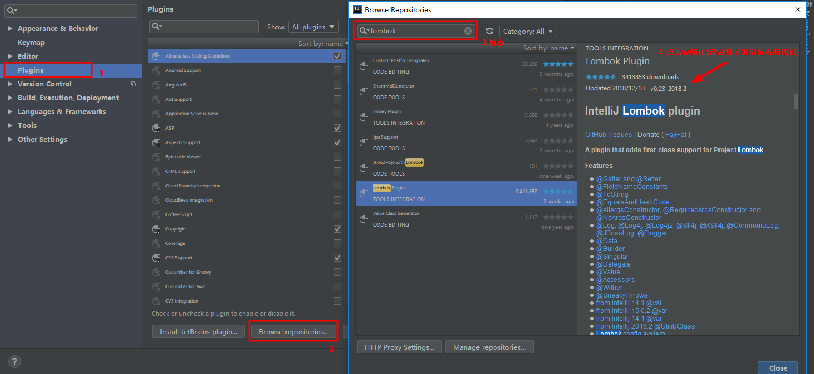
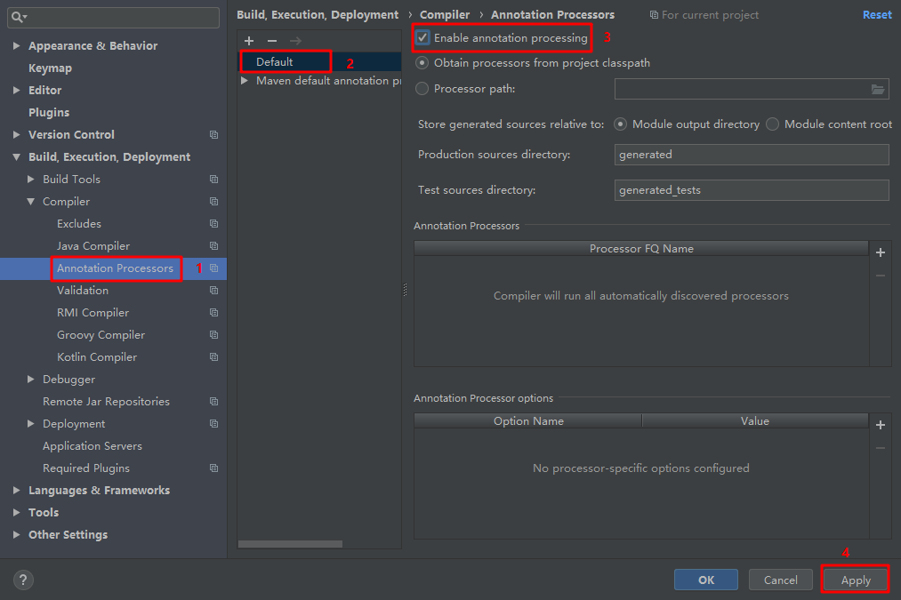
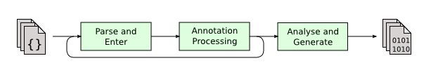

Lombok
1. Lombok简介
官方介绍： Project Lombok is a java library that automatically plugs into your editor and build tools, spicing up your java.Never write another getter or equals method again, with one annotation your class has a fully featured builder, Automate your logging variables, and much more.
官网地址：Project Lombok
意思：Lombok是一个java库，它可以自动插入编辑器和构建工具中，以提升java性能。不需要另外编写getter或equals方法，使用一个注解，你的类就有一个功能齐全的生成器，自动记录变量，等等。
简而言之：Lombok能以简单的注解形式来简化java代码，提高开发人员的效率。
2. Lombok使用
使用Lombok需要的开发环境为：Java + Maven + IntelliJ IDEA 或 Eclipse(安装Lombok Plugin)
2.1 添加maven依赖
1 | <dependency> |
2.2 安装插件
使用Lombok需要插件的配合，使用开发工具为IDEA。打开IDEA的设置，点击Plugins，点击Browse repositories，在弹出的窗口中搜索lombok，然后安装即可。如图：

2.3 解决编译时出错问题
编译时出错，可能是没有enable注解处理器。Annotation Processors->Enable annotation processing。设置完成之后程序可正常运行。如图：

2.4 代码示例
下面举两个栗子，看看使用lombok和不使用的区别。
2.4.1 创建一个用户类
1 | public class User implements Serializable { |
2.4.2 使用Lombok
- @Data注解
1 |
|
编译得到.class文件。
1 | public class User implements Serializable { |
说明@Data注解在类上，会为类的所有属性自动生成无参构造器、setter/getter 、equals 、canEqual 、hashCode 、toString 方法。
注意：如果类中有
final修饰的属性，则不会为该属性生成setter方法，其他的方法都会有。因为使用final修饰的属性就是一个不可变属性，所以没有setter方法也是很合理的。
2.4.3 自动生成日志变量
1 |
|
编译之后的.class 文件如下：
1 |
|
通过编译可以看到@Slf4j注解生成了log日志变量（严格意义来说是常量），无需去声明一个log就可以在类中使用log记录日志。
2.5 常用注解
常用的几个注解：
@Setter注解：在类或属性上，注解在类上时表示为所有属性生成setter方法，注解在属性上时只为该属性生成setter方法；
@Getter 注解： 同上，区别在于生成的是getter方法；
@ToString 注解：在类上，添加toString()方法；
@EqualsAndHashCode注解：在类上，生成hashCode()、canEqual()方法和equals()方法；
@NoArgsConstructor 注解：在类上，生成无参的构造方法|无参构造器是默认生成的,即使没有添加任何注解；
@RequiredArgsConstructor 注解：在类上，为类中需要特殊处理的属性生成构造方法，只包含这些属性的专属构造器。比如
final和被@NonNull注解的属性；1
2
3
4
5
6
7
8
public class User implements Serializable {
private static final long serialVersionUID = -8054600833969507380L;
final private Integer id = 0;
private String username;
private Integer age;
}编译之后的结果为:
1
2
3
4
5
6
7
8
9
10
11
12
13
14
15public class User implements Serializable {
private static final long serialVersionUID = -8054600833969507380L;
private final Integer id = 0;
private String username;
private Integer age;
public User( String username) {
if (username == null) {
throw new NullPointerException("username is marked non-null but is null");
} else {
this.username = username;
}
}
}从结果可以看出，@RequiredArgsConstructor注解并没有为final修饰的属性创建一个专属的构造器，但是为@nonNull注解修饰的属性创建了专属的构造器。
可能是由于lombok的版本更新，去除了为final修饰的属性创建专属构造器的功能。
@AllArgsConstructor 注解：在类上，生成包含类中所有属性的有参构造方法，同时会覆盖默认的空参构造器；
在基类上使用时没有问题，但是在继承了父类属性的子类上使用时就要注意此时的全参构造仅包含子类中的所有参数，而不包含从父类中继承的属性。
父类：
1
2
3
4
5
public class BaseEntity {
private String userName;
private String password;
}子类：
1
2
3
4
5
6
public class RoleUser extends BaseEntity {
private String roleName;
}子类反编译结果：
1
2
3
4
5
6
7
8
9
10
11public class RoleUser extends BaseEntity {
private String roleName;
...
public RoleUser() {
}
// 只包含特定属性的构造器
public RoleUser(String roleName) {
this.roleName = roleName;
}
}@Data 注解：在类上，生成无参构造器、setter( )/getter( )、equals( )、canEqual( )、hashCode( )、toString( )方法，如为final属性，则不会为该属性生成setter方法；
@Slf4j 注解：在类上，自动生成log变量，严格意义来说是常量；
1
private static final Logger log = LoggerFactory.getLogger(UserController.class);
springboot-1.5.10.Release版本的lombok下使用@Slf4j在编译之后生成的
.class文件中生成的日志对象:1
private static final org.slf4j.Logger log;
@Accessors(chain = true) 使用链式设置属性，set方法返回的是this对象。
1
2
3
4
5
6
7
8
public class User {
private String id;
private String name;
private Integer age;
}使用：
1
2
3
4
5public static void main(String[] args) {
//使用@Accessors(chain = true)
User userChain = new User();
userChain.setId("1").setName("chain").setAge(1);
}@UtilityClass:工具类：使用该注解的类表明是一个工具类，会为类生成私有构造，并将所有的方法都设置为static.
1
2
3
4
5
6
7
8
9
10
11
12
13
14
15
16
17
18
19
20
21
22
23
24
25
public class TestTool {
private static ThreadLocal<Map<String, Object>> threadLocalCache = new ThreadLocal<>();
/**
* 初始化线程本地缓存
*
* @param map
*/
public void init(Map<String, Object> map) {
threadLocalCache.set(map);
}
public Object get(String arg) {
if (StringUtils.isEmpty(arg)) {
return null;
}
Map<String, Object> stringObjectMap = threadLocalCache.get();
if (stringObjectMap.containsKey(arg)) {
return stringObjectMap.get(arg);
}
return null;
}
public void release() {
threadLocalCache.remove();
}
}反编译得到：
1
2
3
4
5
6
7
8
9
10
11
12
13
14
15
16
17
18
19
20public final class TestTool {
private static ThreadLocal<Map<String, Object>> threadLocalCache = new ThreadLocal();
public static void init(Map<String, Object> map) {
threadLocalCache.set(map);
}
public static Object get(String arg) {
if (StringUtils.isEmpty(arg)) {
return null;
} else {
Map<String, Object> stringObjectMap = (Map)threadLocalCache.get();
return stringObjectMap.containsKey(arg) ? stringObjectMap.get(arg) : null;
}
}
public static void release() {
threadLocalCache.remove();
}
private TestTool() {
throw new UnsupportedOperationException("This is a utility class and cannot be instantiated");
}
}
3. Lombok工作原理
在Lombok使用的过程中，只需要添加相应的注解，无需再为此写任何代码。自动生成的代码到底是如何产生的呢？
核心之处就是对于注解的解析上。JDK5引入了注解的同时，也提供了两种解析方式。
运行时解析 运行时能够解析的注解，必须将
@Retention设置为RUNTIME，这样就可以通过反射拿到该注解。java.lang.reflect反射包中提供了一个接口AnnotatedElement，该接口定义了获取注解信息的几个方法，Class、Constructor、Field、Method、Package等都实现了该接口，对反射熟悉的朋友应该都会很熟悉这种解析方式。编译时解析 编译时解析有两种机制，分别简单描述下：
Annotation Processing Tool
apt自JDK5产生，JDK7已标记为过期，不推荐使用，JDK8中已彻底删除，自JDK6开始，可以使用Pluggable Annotation Processing API来替换它，apt被替换主要有2点原因：
- api都在com.sun.mirror非标准包下；
- 没有集成到javac中，需要额外运行；
Pluggable Annotation Processing API
JSR 269自JDK6加入，作为apt的替代方案，它解决了apt的两个问题，javac在执行的时候会调用实现了该API的程序，这样我们就可以对编译器做一些增强，javac执行的过程如下：

Lombok本质上就是一个实现了“JSR 269 API”的程序。在使用javac的过程中，它产生作用的具体流程如下：
- javac对源代码进行分析，生成了一棵抽象语法树（AST）；
- 运行过程中调用实现了“JSR 269 API”的Lombok程序；
- 此时Lombok就对第一步骤得到的AST进行处理，找到
@Data注解所在类对应的语法树（AST），然后修改该语法树（AST），增加getter()和setter()方法定义的相应树节点； - javac使用修改后的抽象语法树（AST）生成字节码文件，即给class增加新的节点（代码块）；
通过读Lombok源码，发现对应注解的实现都在HandleXXX中，如@Getter注解的实现在HandleGetter.handle()。还有一些其它类库使用这种方式实现，比如Google Auto、Dagger等等。
4. Lombok的优缺点
优点：
- 能通过注解的形式自动生成构造器、getter/setter、equals、hashcode、toString等方法，提升了一定的开发效率；
- 让代码变得简洁，不用过多的去关注方法实现；
- 属性修改时，也简化了维护这些属性所生成的getter/setter方法等；
缺点：
- 不支持多种参数构造器的重载，即不能灵活地创建只包含部分属性的构造器；
- 虽然省去了手动创建getter/setter方法的麻烦，但大大降低了源代码的可读性和完整性，降低了阅读源代码的舒适度；
参考：
 微信
微信